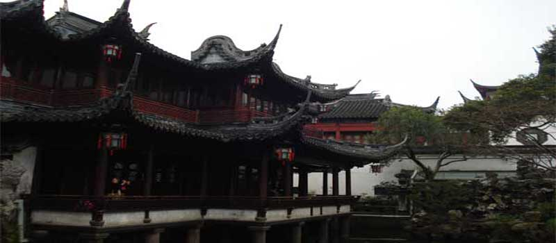
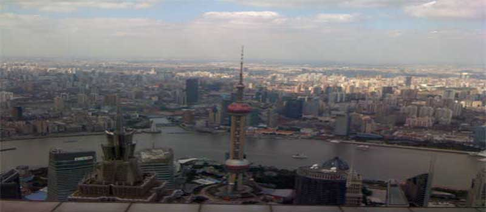
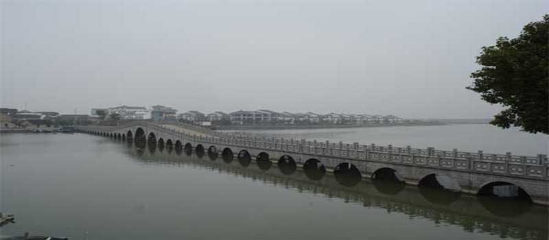

上海には、浦東空港と虹橋空港の２ヶ所の空港があります。それぞれの空港は、地下鉄とバスでつながっています。 上海は、地下鉄などの鉄道が発達してしていて便利です。公共交通機関を使えば出費を抑えながら上海一人旅を楽しめます。 上海のタクシーや地下鉄などの現地での交通事情について紹介します。
上海一人旅をする場合には、簡単に上海の地理を理解すると移動するのには便利だと思います。上海は、大きく浦東と浦西に分かれています。浦西と浦東の簡単な観光スポットを紹介します。また、上海近郊には蘇州の庭園、杭州の西湖といった歴史的にも有名な風光明媚な場所があります。蘇州と杭州の簡単な紹介をします。
上海でも英語が通じると思われるかもしれませんが、上海ではあまり英語が通じません。上海一人旅の場合には、自分の意思を伝える必要性がある場面が出てくると思います。上海で話される上海語と普通話との違いなど簡単な説明をします。 そして、上海一人旅で使える旅行会話で使う中国語を紹介します。
上海を一人旅するとどうしても問題が起きた時に自力で問題を解決する必要が出てくるでしょう。上海は、日本と違い文化や考え方から来る危険があります。上海一人旅で危険に巻き込まれないための現地のお金や現地の交通等の上海一人旅で注意点すべき点を紹介します。